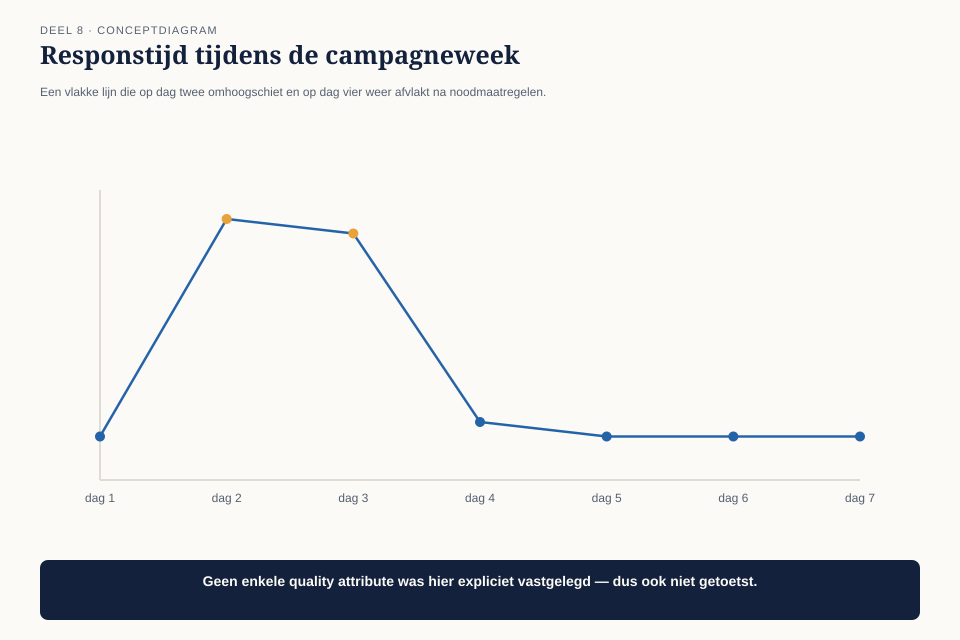
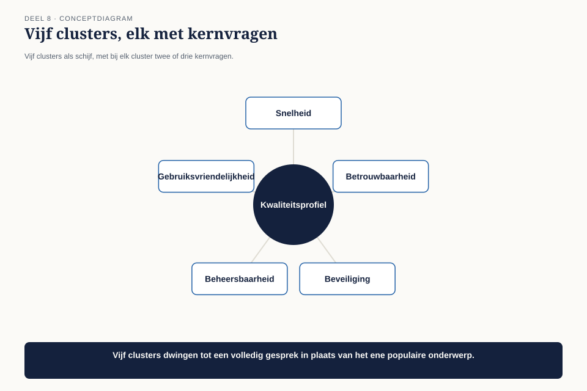

Deel 8 — Quality Attributes
Slidedeck · Ductus-cursus BTABoK · Niveau 1 · deel 8 van 30 · 31 slides
Slide 1 — Titel: Quality Attributes
Deel 8
Ductus
Slide 2 — Agenda: Vanmorgen
- De piekbelasting
- Waarom dit systematisch misgaat
- De vijf clusters
- Van bijvoeglijk naamwoord naar getal
- Je kunt niet alles maximaliseren
- Kwaliteitsattributen als onderhandelingsinstrument
- Het kwaliteitsprofiel
Slide 3 — Sectie: 1. De piekbelasting
Slide 4 — Figuur: Responstijd tijdens de campagneweek

Slide 5 — Bullets: Wat er gebeurde
- Simulatie: 2 seconden in test → 40 seconden in productie
- Aanvragen lopen vast
- Klantenservice: deelnemers denken hun gegevens zijn kwijt
- Niemand had ooit een getal vastgelegd voor gelijktijdige gebruikers
Slide 6 — Statement: Observatie O7
Kwaliteitseisen komen pas in productie boven water — meestal als incident
Slide 7 — Sectie: 2. Waarom dit systematisch misgaat
Slide 8 — Bullets: De blinde vlek
- Deel 6: uitstekende functionele requirement
- Niets over hoeveel, hoe snel, hoe veilig
- Niemand vraagt spontaan “hoe snel moet dit zijn?”
- Tenzij iemand die vraag actief stelt
Slide 9 — Sectie: 3. De vijf clusters
Slide 10 — Figuur: Vijf clusters

Slide 11 — Tabel: Kernvragen
| Cluster | Kernvraag |
|---|---|
| Prestatie/beschikbaarheid/schaalbaarheid | hoe snel, hoe vaak, hoeveel tegelijk |
| Beveiliging | wie mag wat, hoe weet je het zeker |
| Beheersbaarheid | hoe makkelijk te wijzigen en beheren |
| Bruikbaarheid | is het te gebruiken door wie het moet |
| Levering | hoe komt het live, wat dan |
Slide 12 — Sectie: 4. Van bijvoeglijk naamwoord naar getal
Slide 13 — Statement: Een kwaliteitsattribuut zonder getal
is geen eis maar een sfeerbeeld
Slide 14 — Tabel: Sfeerbeeld vs. getal
| Sfeerbeeld | Getal |
|---|---|
| “Moet snel zijn” | 90% binnen 2 sec, bij 1.000 gebruikers |
| “Moet veilig zijn” | geen ongeautoriseerde toegang, jaarlijkse pentest |
Slide 15 — Bullets: Een sfeerbeeld kan nooit falen
- Niemand kan zeggen wanneer het niet meer waar is
- Een getal wel
- De vervolgvraag is net zo belangrijk als het getal
Slide 16 — Opdracht: Opdracht 1 — Sfeerbeeld naar getal
15 minuten, individueel
Zes zinnen herschrijven · elk met de vervolgvraag die het getal oproept
Slide 17 — Sectie: 5. Je kunt niet alles maximaliseren
Slide 18 — Figuur: De spanningsdriehoek

Slide 19 — Bullets: Drie bekende spanningen
- Snelheid vs. beveiliging — elke verificatiestap kost tijd
- Flexibiliteit vs. beheersbaarheid — meer bewegende delen, meer risico
- Beschikbaarheid vs. kosten — elke negen achter de komma kost onevenredig meer
Slide 20 — Statement: De vraag is nooit "wat is het beste niveau"
Maar “welk niveau past bij dit systeem”
Slide 21 — Opdracht: Opdracht 3 — De spanningsdriehoek
20 minuten, tweetallen
Vier situaties · welke twee attributen botsen, wat adviseer je?
Slide 22 — Sectie: 6. Onderhandelingsinstrument
Slide 23 — Statement: Geen dictaat.
Een keuzemenu.
Slide 24 — Citaat: 99,5% beschikbaarheid kost X. 99,9% kost 3X vanwege de redundantie. Welke past b
99,5% beschikbaarheid kost X. 99,9% kost 3X vanwege de redundantie. Welke past bij hoe kritisch dit is?
Slide 25 — Bullets: De link met deel 3
- Hogere beschikbaarheid = meestal een beschermende investering
- Verdient zichzelf niet terug in de gewone zin
- Dezelfde denkfout duikt hier opnieuw op — nu bij kwaliteitsattributen
Slide 26 — Sectie: 7. Het kwaliteitsprofiel
Slide 27 — Figuur: Vijf clusters, vier kolommen

Slide 28 — Opdracht: Opdracht 4 — Je eigen kwaliteitsprofiel
25 minuten, individueel
Vijf clusters · doel · getal · wat offer je op?
Slide 29 — Bullets: Terug naar de campagne
- Schaalbaarheid: expliciet getal, 2.000 gebruikers, met wachtrij erboven
- Kosten uitgelegd als keuzemenu, niet als dictaat
- De directeur Uitvoering kiest — met de cijfers van de storing in de hand
Slide 30 — Bullets: O7 gesloten
- Getal vóór de bouw, geen sfeerbeeld achteraf
- Spanning tussen attributen expliciet gemaakt
- Kwaliteitsniveau onderhandeld, niet opgelegd
- Zes van de zeven observaties nu gesloten
Slide 31 — Titel: Volgende keer
Deel 9 — IT Environment
Geen nieuwe observatie. Het fundament voor hoe dit alles verankerd wordt.